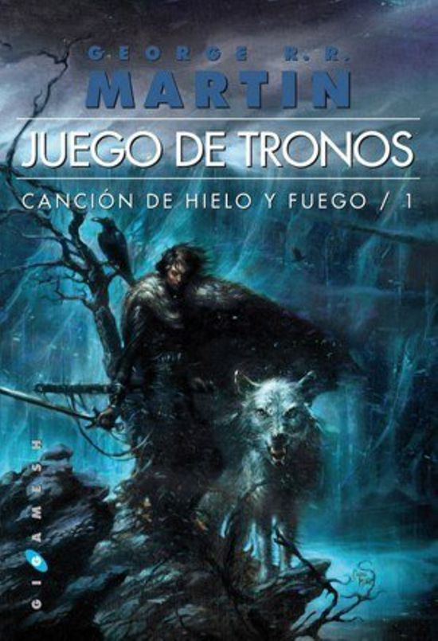
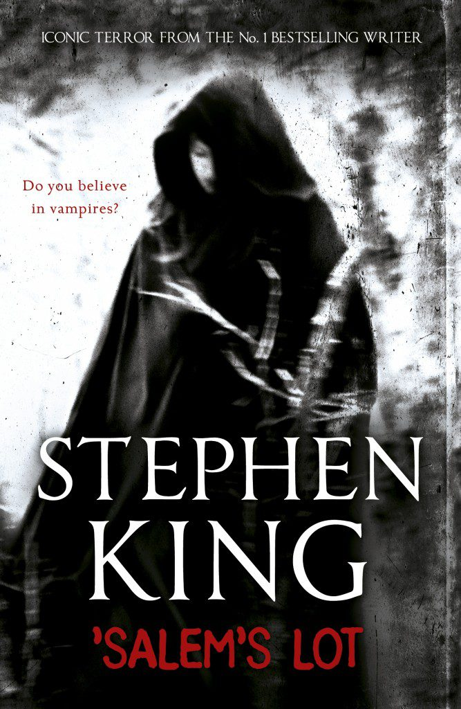
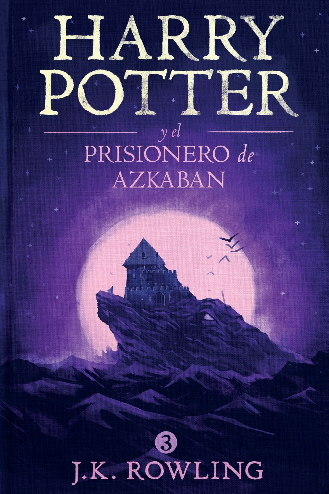
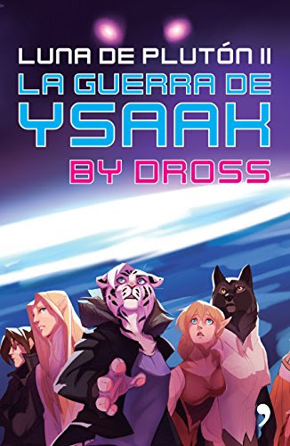
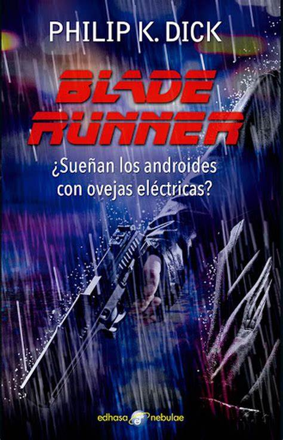
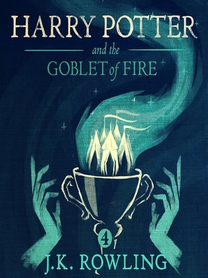
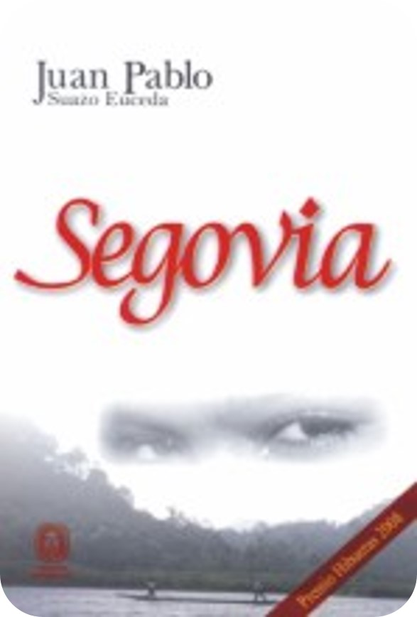
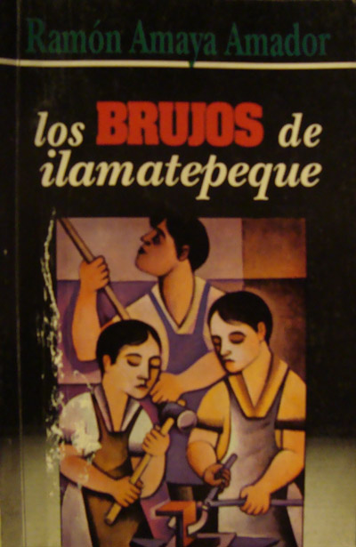

|  |  |  |  |
|
El leer, me transporta a otros lugares, momentos y personajes sin necesidad de moverme del sitio donde me encuentro. Quedarme encerrada en un libro es sinónimo de escapar, experimentar y disfrutar nuevas sensaciones; me hace sentir libre y me ayuda a combatir el aburrimiento. |
|  |  |  |  |